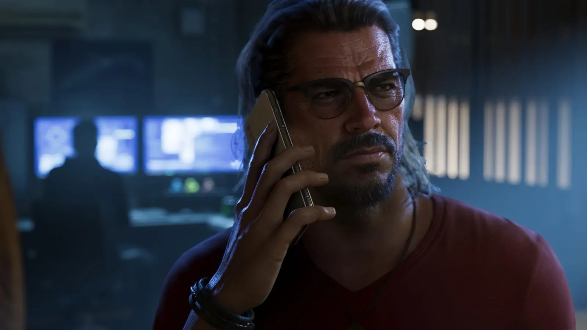
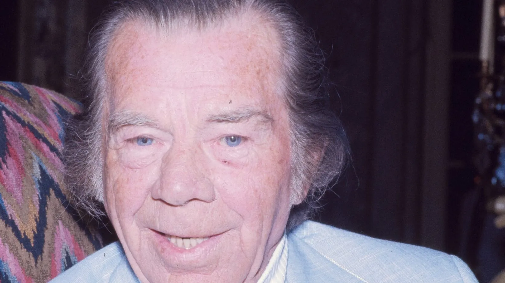
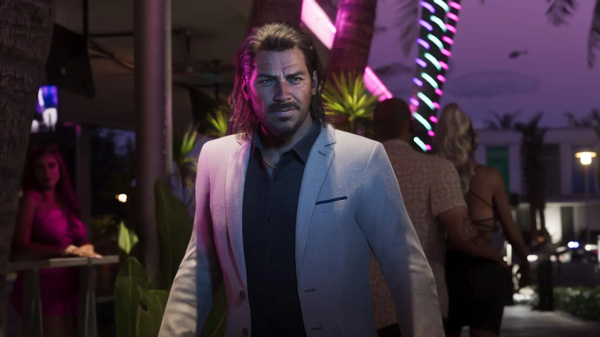

Рауль Баутиста и профессиональные грабители банков
Опубликовано:
Рауль — вымышленный герой, Rockstar прототип не называла. Но образ обаятельного профессионала, который грабит банки с командой, — классика американской криминальной истории. Самый известный такой грабитель, Вилли Саттон, провёл последние годы во Флориде. Сравнение по образу — наша трактовка.


- По описанию Rockstar, Рауль Баутиста — опытный грабитель банков: уверенный, обаятельный и хитрый.
- Он постоянно ищет талантливых людей, готовых рисковать ради большого куша, и с каждым делом поднимает ставки.
- Вилли Саттон (1901–1980) за 40 лет украл, по оценкам, около 2 млн долларов; его звали «Вилли-Актёр» за грабежи в гриме и чужой форме.
- Саттон трижды бежал из тюрьмы, был в списке 10 самых разыскиваемых ФБР и умер в 1980 году в Спринг-Хилле, Флорида.
Что в игре
Рауль Баутиста — один из персонажей, которых Rockstar представила на официальном сайте GTA 6. По описанию, он опытный грабитель банков: уверенный, обаятельный и хитрый. Рауль всё время ищет талантливых людей, готовых рисковать ради самых больших денег. Но с каждым новым делом его безрассудство поднимает ставки.
Подробностей о его роли в сюжете Rockstar пока не раскрывала. Из описания ясно главное: Рауль — профессионал, который работает с командой, а не одиночка с пистолетом.

Что в реальности
Вилли Саттон родился 30 июня 1901 года в Бруклине. За сорок лет он, по оценкам, украл около 2 млн долларов. Его звали «Вилли-Актёр» и «Скользкий Вилли»: на дело он шёл в гриме и чужой форме — почтальона, курьера, полицейского.
Саттон трижды бежал из тюрьмы — в 1932, 1945 и 1947 годах. 20 марта 1950 года ФБР внесло его в список 10 самых разыскиваемых преступников. В феврале 1952 года его узнал в метро продавец одежды Арнольд Шустер, и Саттона арестовали. Он вышел на свободу в канун Рождества 1969 года, а умер 2 ноября 1980 года в Спринг-Хилле, Флорида.
«Я никогда этого не говорил. Заслуга принадлежит какому-то находчивому репортёру».
Вилли Саттон о фразе «Потому что там деньги», автобиография «Where the Money Was» (1976)
Саттон уверял, что никогда не носил заряженное оружие, «потому что кто-нибудь мог пострадать». После тюрьмы он снялся в рекламе банковской карты с фотографией: «Теперь, когда я говорю, что я Вилли Саттон, мне верят».
Совпадает и отличается
| Реальность | GTA 6 | |
|---|---|---|
| Профессиональный грабитель банков | Вилли Саттон, 40 лет «карьеры» | 🟢 Да |
| Обаяние и хитрость | «Вилли-Актёр», грабежи в гриме | 🟢 Да, по описанию Rockstar |
| Связь с Флоридой | Умер в Спринг-Хилле, Флорида | 🟡 Действует в Леониде |
| Прототип | — | 🟡 Вымышленный, прототип не назван |
Источники: Rockstar Games — официальное описание персонажа Raul Bautista (rockstargames.com/VI); Википедия — Willie Sutton; FBI — Ten Most Wanted Fugitives; Library of Congress — фото Бернарда Готфрида (public domain).
Реальные фото: Фото: Gotfryd, Bernard, photographer, Public domain · Wikimedia Commons. Кадры игры: Rockstar Games.
Каждый день — одно сравнение: кадр игры рядом с реальным фото. Подписывайтесь:
YouTubeInstagramTikTok
 vs
vs
 vs
vs
 vs
vs